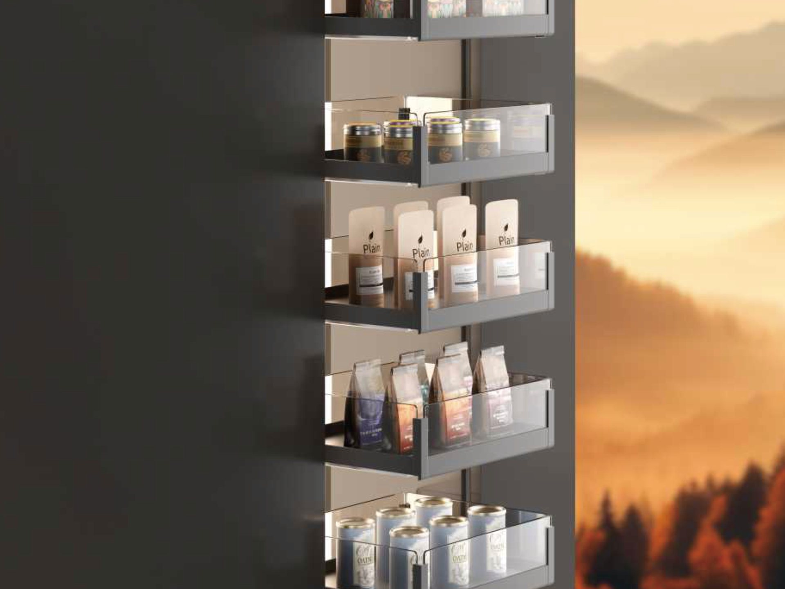
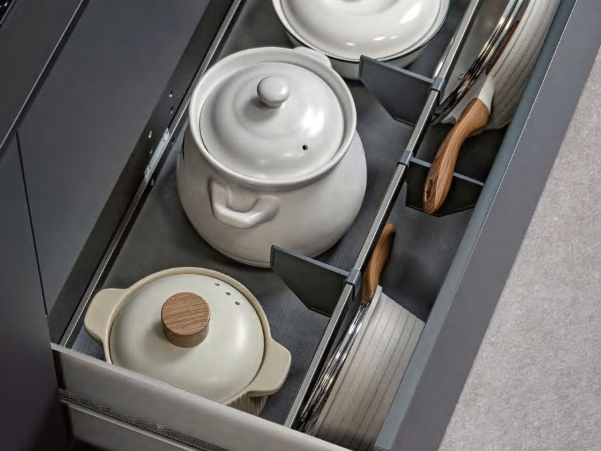
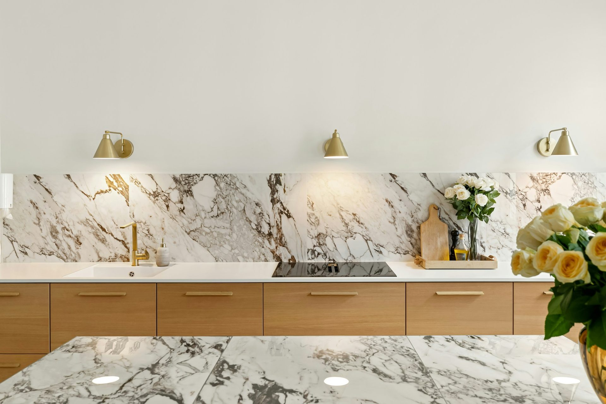
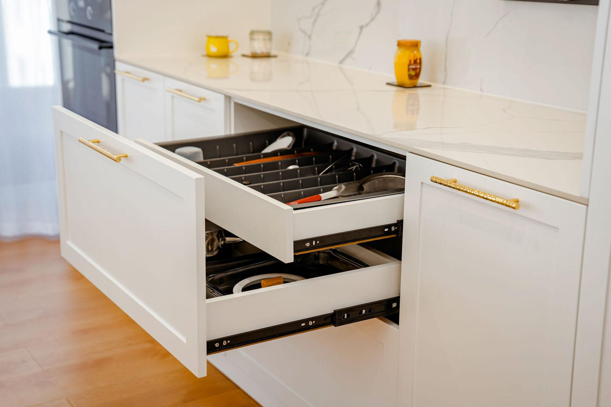

Anyone can sell you boxes.
This is the part that takes knowing.
Carcasses and doors decide how long a kitchen lasts. The fittings decide whether you like using it. Here is how we think about every one of them, so you can judge for yourself whether we know the trade before you send us a measurement.

Things you cannot reach
Storage you own
but never open.
The top shelf of an overhead, the back of a blind corner, the bottom of a tall cupboard. Every kitchen has at least one, and the space is already paid for.

Pull-down wall basket
The top shelf of an overhead comes down to about bench height, then springs back.
See how it works →Magic corner pull-out
The front trays pull out of a blind corner and the rear trays slide across behind them.
See how it works →
Tall larder pull-out
Full-height tiers that come out as one piece, reachable from both sides.
See how it works →Things that will not stay put
A drawer is only as good
as what is in it.
Deep drawers were the best thing to happen to kitchens in thirty years, and an empty one becomes a single heap within a fortnight. These are what stop that.

Drawer organisers
Cutlery, knife and spice inserts cut to your drawer, so they do not travel when it shuts.
See how it works →
Plate and pot racks
Movable pegs hold plates on edge and keep pots from nesting inside each other.
See how it works →
Deep drawer fit-out
Dividers and lid rails, so a deep drawer does not become one pile you dig through.
See how it works →
Under-sink storage
Pull-outs shaped around the trap, plus the inside of the door the plumbing cannot reach.
See how it works →Why we write this down
Judge us on the detail.
You are going to get two or three quotes and they will all show a number and a pretty render. None of that tells you whether the person drawing it has thought about the clearance on your blind corner or what sits under your sink. This is the detail that separates the quotes, which is why we publish it instead of saving it for the appointment.
We publish the rates for the same reason — the cost page sets out what a kitchen costs per linear metre before anyone asks you for a measurement.
- Clearances checked before anything is cut
- Runner ratings specified to the loaded weight
- Sink and trap measured before the cabinet
- Fittings on the plan, not added afterwards
- Every line itemised, nothing bundled
Frequently asked
Storage accessories — questions
If your question is not here, call the studio. We would rather talk it through than have you guess.
Ask us directly →What do kitchen storage accessories cost?
Each one is quoted as its own line on your quote rather than bundled into a package. That way you can take any of them off and see exactly what comes back, which is not true of a kitchen sold as a package with the fit-out included.
Do I have to decide on these when I order?
It is much easier if you do. Most of them need the cabinet drawn around them — clearances for a magic corner, runner ratings for a loaded larder, the width of a wall cabinet for a pull-down. Adding them later is sometimes possible and always more awkward.
Are they fitted before delivery?
If you order delivered assembled, yes — fitted and adjusted before the carton is closed. Flat packed, each one arrives with the cabinet it belongs to and you fit it as you build that cabinet.
Which ones are actually worth it?
If you only do one, make it drawer organisers in the top drawer, because it is the cheapest and you touch it every day. After that it depends on the room: a blind corner makes the magic corner worth it, a tall cabinet makes the larder worth it, and overheads you cannot reach make the pull-down basket worth it.
Can I add accessories to a kitchen I already have?
Some, if the cabinet suits. Drawer organisers are the easiest because they are cut to the drawer you have. Anything that needs clearance or a particular runner is far less reliable retrofitted than specified from the start.
Delivered assembled
The assembly is done
before it arrives.
Carcasses built square on a bench, Blum hardware fitted, doors hung and adjusted to even gaps. On site you are fixing finished cabinets to a wall, not building them on the floor. Our own team fits it in Central Queensland; your installer fits it anywhere else in Australia. Prefer to build it yourself? The same kitchen ships flat pack.

Handleless rail on an assembled run

Timber island, stone top

Galley layout for a narrow room

Your kitchen
Send us the dimensions.
We will send back a number.
A fixed, itemised quote with every fitting on its own line, flat packed or delivered assembled.